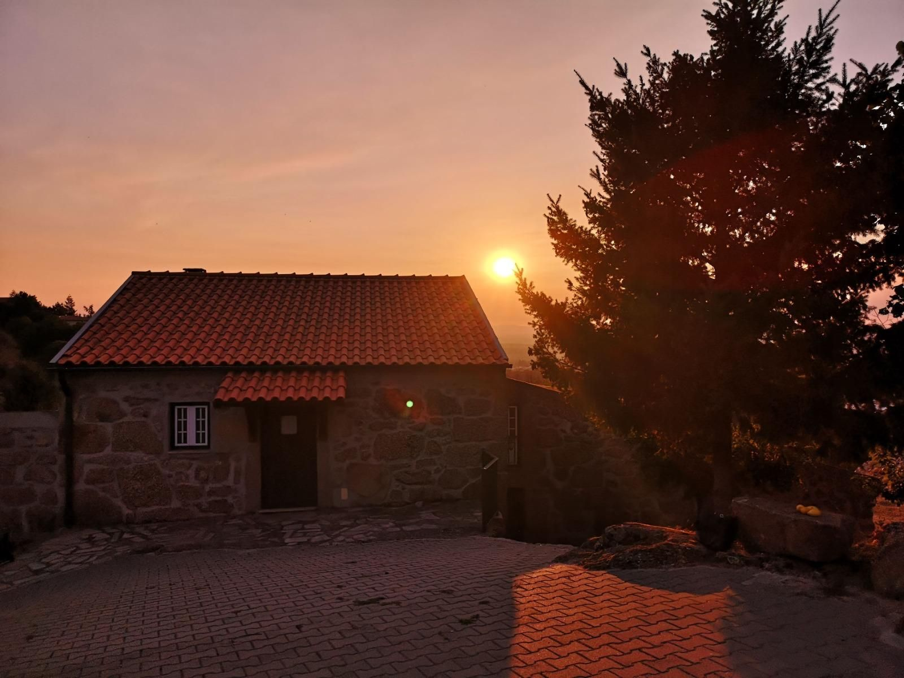

Região
Gouveia é uma das portas do Parque Natural da Serra da Estrela. Daqui sobe-se ao planalto e às lagoas, e descem-se as estradas até às aldeias de granito.
Lugares a visitar
-
Centro de Gouveia
Museu Abel Manta, jardins e restaurantes.
Ver trajeto 5 min -
Linhares da Beira
Aldeia histórica com castelo medieval.
Ver trajeto 20 min -
Folgosinho
Aldeia serrana de casas de granito.
Ver trajeto 20 min -
Vale do Rossim
Lagoa com praia fluvial, a mais de 1400 metros de altitude.
Ver trajeto 30 min -
Manteigas
Vila no vale glaciar do Zêzere.
Ver trajeto 45 min -
Torre
O ponto mais alto de Portugal continental.
Ver trajeto 1 h
Tempos aproximados de carro a partir da quinta.
À mesa na serra
A cozinha da região é feita de produtos da serra e do vale. Nos restaurantes de Gouveia e das aldeias à volta há sempre:

-
Queijo da Serra
Feito com leite de ovelha, amanteigado no inverno.
-
Borrego
Assado no forno, como se faz nas aldeias da serra.
-
Vinho do Dão
A região demarcada fica mesmo ao lado de Gouveia.
Venha passar uns dias na quinta
Diga-nos as datas e quantas pessoas vêm. Respondemos com a disponibilidade e o preço da estadia.
Reservar